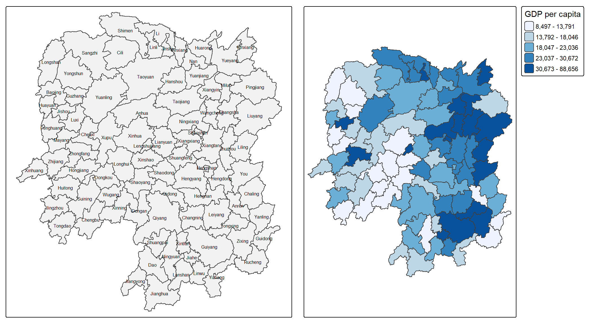
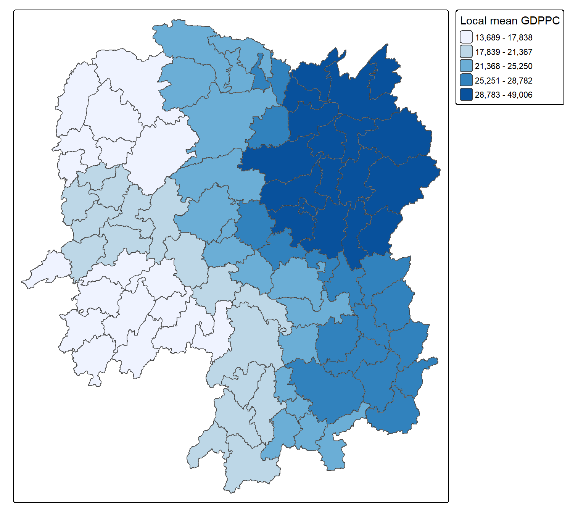
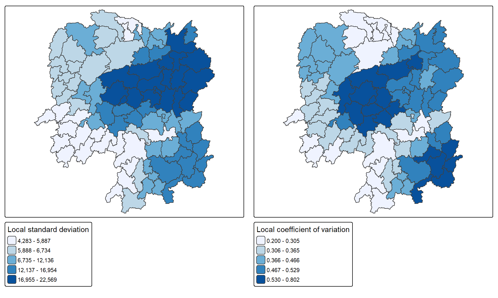
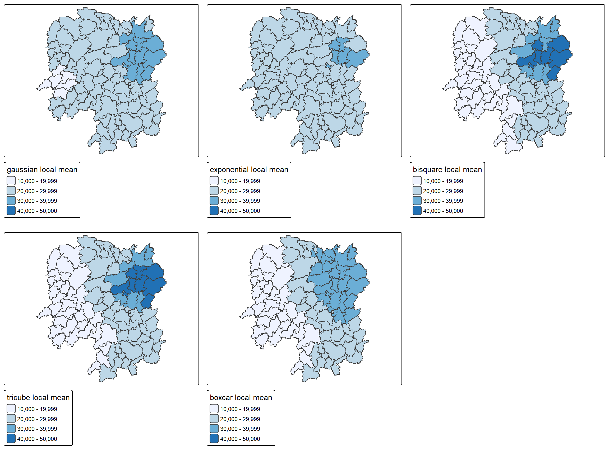

library(sf)
library(dplyr)
library(readr)
library(tmap)
library(knitr)
library(GWmodel)
tmap_mode("plot")In-class Exercise 4
Geographically weighted summary statistics of Hunan GDPPC
1. Learning objective
A single provincial average conceals differences between local areas. This exercise follows the classroom script and lecture screenshots to calculate geographically weighted summary statistics (GWSS) for Hunan’s GDP per capita in 2012. It compares cross-validation and AICc bandwidth selection, maps local summaries, and examines sensitivity to the kernel function.
The shared course reference is Chapter 8: Spatial Weights and Applications. The corresponding Hands-on Exercise 4 covers spatial neighbour lists and spatial lags; this classroom page applies the supplied GWmodel workflow.
2. Packages and data preparation
Import the shapefile and CSV
The course data are stored once under handson4/data and shared by both pages. st_read() produces an sf polygon object, and read_csv() produces a tibble. The shapefile uses WGS 84 longitude and latitude.
hunan_sf <- st_read(dsn = "handson4/data/geospatial",
layer = "Hunan", quiet = TRUE)
hunan2012 <- read_csv("handson4/data/aspatial/Hunan_2012.csv",
show_col_types = FALSE)
kable(tibble(Input = c("Hunan polygons", "Hunan 2012 table"),
Rows = c(nrow(hunan_sf), nrow(hunan2012)),
Class = c(class(hunan_sf)[1], class(hunan2012)[1])))| Input | Rows | Class |
|---|---|---|
| Hunan polygons | 88 | sf |
| Hunan 2012 table | 88 | spec_tbl_df |
st_crs(hunan_sf)Coordinate Reference System:
User input: WGS 84
wkt:
GEOGCRS["WGS 84",
DATUM["World Geodetic System 1984",
ELLIPSOID["WGS 84",6378137,298.257223563,
LENGTHUNIT["metre",1]]],
PRIMEM["Greenwich",0,
ANGLEUNIT["degree",0.0174532925199433]],
CS[ellipsoidal,2],
AXIS["latitude",north,
ORDER[1],
ANGLEUNIT["degree",0.0174532925199433]],
AXIS["longitude",east,
ORDER[2],
ANGLEUNIT["degree",0.0174532925199433]],
ID["EPSG",4326]]Join and retain the required fields
I explicitly match County and select columns by name. This retains the classroom’s eight attributes without relying on their column positions. The checks detect duplicate keys, missing matches and incorrect feature counts before analysis.
stopifnot(!anyDuplicated(hunan_sf$County), !anyDuplicated(hunan2012$County))
hunan_sf <- left_join(hunan_sf, hunan2012, by = "County") |>
select(NAME_2, ID_3, NAME_3, County, GDPPC, GIO, Agri, Service)
stopifnot(nrow(hunan_sf) == 88L, !anyNA(hunan_sf$GDPPC),
all(is.finite(hunan_sf$GDPPC)), all(st_is_valid(hunan_sf)))
kable(head(st_drop_geometry(hunan_sf)), caption = "Prepared county attributes")| NAME_2 | ID_3 | NAME_3 | County | GDPPC | GIO | Agri | Service |
|---|---|---|---|---|---|---|---|
| Changde | 21098 | Anxiang | Anxiang | 23667 | 5108.9 | 4524.41 | 14100 |
| Changde | 21100 | Hanshou | Hanshou | 20981 | 13491.0 | 6545.35 | 17727 |
| Changde | 21101 | Jinshi | Jinshi | 34592 | 10935.0 | 2562.46 | 7525 |
| Changde | 21102 | Li | Li | 24473 | 18402.0 | 7562.34 | 53160 |
| Changde | 21103 | Linli | Linli | 25554 | 8214.0 | 3583.91 | 7031 |
| Changde | 21104 | Shimen | Shimen | 27137 | 17795.0 | 5266.51 | 6981 |
3. Mapping GDPPC
basemap <- tm_shape(hunan_sf) + tm_polygons(fill = "grey95") +
tm_text("NAME_3", size = 0.5)
gdppc <- tm_shape(hunan_sf) +
tm_polygons(fill = "GDPPC",
fill.scale = tm_scale_intervals(style = "quantile", n = 5,
values = "brewer.blues"),
fill.legend = tm_legend(title = "GDP per capita"))
tmap_arrange(basemap, gdppc, ncol = 2)
kable(tibble(Mean = mean(hunan_sf$GDPPC), Median = median(hunan_sf$GDPPC),
SD = sd(hunan_sf$GDPPC), Minimum = min(hunan_sf$GDPPC),
Maximum = max(hunan_sf$GDPPC)), digits = 2,
caption = "Unweighted summary across the 88 counties")| Mean | Median | SD | Minimum | Maximum |
|---|---|---|---|---|
| 24404.81 | 20433 | 14994.26 | 8497 | 88656 |
These are summaries of county GDPPC values, not population-weighted provincial GDPPC. The global mean (2.440481^{4}) and median (2.0433^{4}) provide a reference for the local estimates below.
4. Convert to a spatial data frame
GWmodel’s functions in this workflow accept sp objects. Conversion preserves polygon order and attributes. With longlat = TRUE, the following calculations use great-circle distances between the polygon representative coordinates used by GWmodel.
hunan_sp <- as_Spatial(hunan_sf)
stopifnot(isTRUE(st_is_longlat(hunan_sf)),
identical(hunan_sp$County, hunan_sf$County))
class(hunan_sp)[1] "SpatialPolygonsDataFrame"
attr(,"package")
[1] "sp"5. Select an adaptive bandwidth
An adaptive bandwidth is a neighbour count; its physical radius varies by location. The intercept-only model GDPPC ~ 1 selects a scale for a local mean. CV minimises leave-one-out prediction error. The "AIC" option in bw.gwr() uses the corrected Akaike information criterion (AICc). Both searches use the bisquare kernel, as in class.
bw_CV <- bw.gwr(GDPPC ~ 1, data = hunan_sp,
approach = "CV", adaptive = TRUE,
kernel = "bisquare", longlat = TRUE)Adaptive bandwidth: 62 CV score: 15515442343
Adaptive bandwidth: 46 CV score: 14937956887
Adaptive bandwidth: 36 CV score: 14408561608
Adaptive bandwidth: 29 CV score: 14198527496
Adaptive bandwidth: 26 CV score: 13898800611
Adaptive bandwidth: 22 CV score: 13662299974
Adaptive bandwidth: 22 CV score: 13662299974 bw_AIC <- bw.gwr(GDPPC ~ 1, data = hunan_sp,
approach = "AIC", adaptive = TRUE,
kernel = "bisquare", longlat = TRUE)Adaptive bandwidth (number of nearest neighbours): 62 AICc value: 1923.156
Adaptive bandwidth (number of nearest neighbours): 46 AICc value: 1920.469
Adaptive bandwidth (number of nearest neighbours): 36 AICc value: 1917.324
Adaptive bandwidth (number of nearest neighbours): 29 AICc value: 1916.661
Adaptive bandwidth (number of nearest neighbours): 26 AICc value: 1914.897
Adaptive bandwidth (number of nearest neighbours): 22 AICc value: 1914.045
Adaptive bandwidth (number of nearest neighbours): 22 AICc value: 1914.045 kable(tibble(Criterion = c("Cross-validation", "AICc"),
Adaptive_bandwidth = c(bw_CV, bw_AIC)),
caption = "Selected bandwidths, expressed as neighbour counts")| Criterion | Adaptive_bandwidth |
|---|---|
| Cross-validation | 22 |
| AICc | 22 |
CV selects 22 and AICc selects 22. I use the AICc bandwidth for the main classroom analysis. A bandwidth chosen for the local mean need not be optimal for every other statistic. Small neighbourhoods retain more local variation; larger ones smooth over a broader area.
6. Calculate geographically weighted summaries
The bisquare weight decreases with distance and is zero at and beyond the bandwidth boundary. quantile = TRUE adds weighted distribution summaries. Each county receives a local estimate informed by nearby county values, including its own value.
gwstat <- gwss(data = hunan_sp, vars = "GDPPC", bw = bw_AIC,
kernel = "bisquare", quantile = TRUE,
adaptive = TRUE, longlat = TRUE)
gwstat_df <- st_drop_geometry(st_as_sf(gwstat$SDF))
stopifnot(nrow(gwstat_df) == nrow(hunan_sf),
isTRUE(all.equal(unname(sp::coordinates(gwstat$SDF)),
unname(sp::coordinates(hunan_sp)),
check.attributes = FALSE)))
hunan_gstat <- cbind(hunan_sf, gwstat_df)
kable(head(gwstat_df), digits = 2,
caption = "Local statistics returned by GWmodel, in unchanged county order")| GDPPC_LM | GDPPC_LSD | GDPPC_LVar | GDPPC_LSKe | GDPPC_LCV | GDPPC_Median | GDPPC_IQR | GDPPC_QI |
|---|---|---|---|---|---|---|---|
| 27085.04 | 7978.29 | 63653173 | 3.13 | 0.29 | 25246 | 7419 | -0.11 |
| 28227.25 | 12654.85 | 160145149 | 2.17 | 0.45 | 22879 | 8460 | -0.53 |
| 25962.57 | 6749.03 | 45549470 | 2.64 | 0.26 | 24418 | 6039 | 0.13 |
| 25161.45 | 5033.56 | 25336676 | 0.58 | 0.20 | 24418 | 6039 | 0.13 |
| 24790.65 | 5627.53 | 31669048 | 1.45 | 0.23 | 24418 | 6039 | 0.13 |
| 22612.98 | 6248.12 | 39039059 | -0.22 | 0.28 | 22879 | 6900 | 0.31 |
The output includes local mean, standard deviation, variance, skewness and coefficient of variation, plus median, interquartile range and quantile imbalance. I extract only the attributes before attaching them to the original polygons, avoiding an extra geometry column.
7. Visualise local statistics
Local mean
tm_shape(hunan_gstat) +
tm_polygons(fill = "GDPPC_LM",
fill.scale = tm_scale_intervals(style = "quantile", n = 5,
values = "brewer.blues"),
fill.legend = tm_legend(title = "Local mean GDPPC")) +
tm_borders(col = "grey45", lwd = 0.5) +
tm_layout(frame = TRUE)
kable(st_drop_geometry(hunan_gstat) |>
select(County, GDPPC, GDPPC_LM, GDPPC_LSD, GDPPC_LCV) |>
arrange(desc(GDPPC_LM)) |> head(5), digits = 2,
caption = "Five highest local mean estimates")| County | GDPPC | GDPPC_LM | GDPPC_LSD | GDPPC_LCV | |
|---|---|---|---|---|---|
| 84 | Changsha | 88656 | 49005.84 | 22568.84 | 0.46 |
| 7 | Liuyang | 63118 | 46252.81 | 22111.85 | 0.48 |
| 9 | Wangcheng | 70666 | 46204.04 | 22239.74 | 0.48 |
| 67 | Pingjiang | 17252 | 41645.92 | 21603.18 | 0.52 |
| 8 | Ningxiang | 62202 | 41282.13 | 21496.61 | 0.52 |
The largest local mean is at Changsha (4.900584^{4}), while the smallest is at Wugang (1.36887^{4}). These describe the surrounding economic context and should not be read as replacement observations for each county.
Local dispersion
local_map <- function(field, title) {
tm_shape(hunan_gstat) + tm_polygons(fill = field,
fill.scale = tm_scale_intervals(style = "quantile", n = 5,
values = "brewer.blues"),
fill.legend = tm_legend(title = title))
}
tmap_arrange(local_map("GDPPC_LSD", "Local standard deviation"),
local_map("GDPPC_LCV", "Local coefficient of variation"), ncol = 2)
Local standard deviation describes dispersion in GDPPC units. The local coefficient of variation divides it by the local mean, indicating relative heterogeneity. Darker colours indicate higher values within each panel; the two legends have different units. High dispersion can occur where high- and low-GDPPC counties are close together, even when the local mean is moderate.
8. Compare kernel functions
The classroom extension asks for five kernels. I hold the selected neighbour count constant to examine kernel sensitivity. Gaussian and exponential kernels have non-zero tails; bisquare, tricube and boxcar have finite support. Thus, equal adaptive bandwidth counts do not imply identical effective neighbourhoods. These are sensitivity runs, not separately optimised models.
kernels <- c("gaussian", "exponential", "bisquare", "tricube", "boxcar")
kernel_means <- lapply(kernels, function(k) {
if (k == "bisquare") return(gwstat_df$GDPPC_LM)
fit <- gwss(data = hunan_sp, vars = "GDPPC", bw = bw_AIC,
kernel = k, quantile = FALSE, adaptive = TRUE, longlat = TRUE)
fit$SDF$GDPPC_LM
})
names(kernel_means) <- kernels
kernel_summary <- bind_rows(lapply(kernels, function(k) {
tibble(Kernel = k, Minimum = min(kernel_means[[k]]),
Maximum = max(kernel_means[[k]]),
Mean_absolute_change_from_bisquare =
mean(abs(kernel_means[[k]] - kernel_means$bisquare)))
}))
kable(kernel_summary, digits = 2)| Kernel | Minimum | Maximum | Mean_absolute_change_from_bisquare |
|---|---|---|---|
| gaussian | 19412.37 | 32290.52 | 3701.61 |
| exponential | 20501.53 | 32266.50 | 3937.90 |
| bisquare | 13688.70 | 49005.84 | 0.00 |
| tricube | 13506.34 | 48411.36 | 180.62 |
| boxcar | 15546.45 | 37463.27 | 2528.85 |
kernel_breaks <- pretty(range(unlist(kernel_means)), n = 5)
kernel_maps <- lapply(kernels, function(k) {
mapped <- hunan_sf
mapped$Local_mean <- kernel_means[[k]]
tm_shape(mapped) + tm_polygons(fill = "Local_mean",
fill.scale = tm_scale_intervals(style = "fixed", breaks = kernel_breaks,
values = "brewer.blues"),
fill.legend = tm_legend(title = paste(k, "local mean")))
})
do.call(tmap_arrange, c(kernel_maps, list(ncol = 3)))
Relative to bisquare, exponential produces the largest mean absolute change (3937.9). The common breaks make the smoothing differences visible without changes in classification disguising the comparison. A different kernel or bandwidth can change individual county rankings.
9. What I learned
GWSS provides a local description of both the level and variability of GDPPC. Interpreting the mean together with the standard deviation and coefficient of variation is more informative than treating a high local mean as evidence of uniformly high county values. The kernel comparison also shows why bandwidth and weighting choices should be reported with every local map.
This is an exploratory analysis of 2012 observations. It does not test the significance of clusters, explain causal drivers, or establish current economic conditions. Polygon representative coordinates approximate county locations, and estimates near the provincial boundary lack information from counties outside the dataset.
10. References and reproducibility
- Kam Tin Seong, R for Geospatial Data Science and Analytics, Chapter 8.
- Classroom Exercise 4 script and lecture screenshots supplied for this assignment.
- Instructor’s Hunan data files.
All tables and maps on this page are generated by the displayed R code.
Code
sessionInfo()R version 4.5.3 (2026-03-11 ucrt)
Platform: x86_64-w64-mingw32/x64
Running under: Windows 11 x64 (build 26200)
Matrix products: default
LAPACK version 3.12.1
locale:
[1] LC_COLLATE=English_United States.utf8
[2] LC_CTYPE=English_United States.utf8
[3] LC_MONETARY=English_United States.utf8
[4] LC_NUMERIC=C
[5] LC_TIME=English_United States.utf8
time zone: Asia/Shanghai
tzcode source: internal
attached base packages:
[1] stats graphics grDevices utils datasets methods base
other attached packages:
[1] GWmodel_2.4-1 Rcpp_1.1.2 sp_2.2-3 robustbase_0.99-7
[5] knitr_1.51 tmap_4.4-1 readr_2.2.0 dplyr_1.2.1
[9] sf_1.1-3
loaded via a namespace (and not attached):
[1] tidyselect_1.2.1 fastmap_1.2.0 leaflegend_1.2.8
[4] leaflet_2.2.3 TH.data_1.1-5 XML_3.99-0.24
[7] digest_0.6.39 lifecycle_1.0.5 LearnBayes_2.15.2
[10] survival_3.8-6 terra_1.9-50 magrittr_2.0.5
[13] compiler_4.5.3 rlang_1.3.0 tools_4.5.3
[16] yaml_2.3.12 data.table_1.18.6.1 FNN_1.1.4.1
[19] htmlwidgets_1.6.4 bit_4.6.0 classInt_0.4-11
[22] multcomp_1.4-32 abind_1.4-8 KernSmooth_2.23-26
[25] withr_3.0.3 leafsync_0.1.0 grid_4.5.3
[28] xts_0.14.3 cols4all_0.10 e1071_1.7-17
[31] leafem_0.2.5 colorspace_2.1-3 spacesXYZ_1.6-0
[34] MASS_7.3-65 cli_3.6.6 mvtnorm_1.4-2
[37] crayon_1.5.3 rmarkdown_2.31 intervals_0.15.5
[40] generics_0.1.4 otel_0.2.0 tzdb_0.5.0
[43] tmaptools_3.3 spdep_1.4-2 DBI_1.3.0
[46] proxy_0.4-29 splines_4.5.3 spatialreg_1.4-3
[49] stars_0.7-3 parallel_4.5.3 s2_1.1.12
[52] marginaleffects_1.0.0 base64enc_0.1-6 vctrs_0.7.3
[55] sandwich_3.1-3 boot_1.3-32 Matrix_1.7-4
[58] jsonlite_2.0.0 spData_2.3.5 hms_1.1.4
[61] bit64_4.8.6 crosstalk_1.2.2 units_1.0-1
[64] maptiles_0.12.0 glue_1.8.1 lwgeom_0.2-17
[67] DEoptimR_1.2-1 codetools_0.2-20 deldir_2.0-4
[70] raster_3.6-32 tibble_3.3.1 logger_0.4.3
[73] pillar_1.11.1 htmltools_0.5.9 R6_2.6.1
[76] wk_0.9.5 vroom_1.7.1 evaluate_1.0.5
[79] lattice_0.22-9 backports_1.5.1 png_0.1-9
[82] class_7.3-23 coda_0.19-4.1 nlme_3.1-168
[85] spacetime_1.3-4 xfun_0.60 zoo_1.9-0
[88] pkgconfig_2.0.3